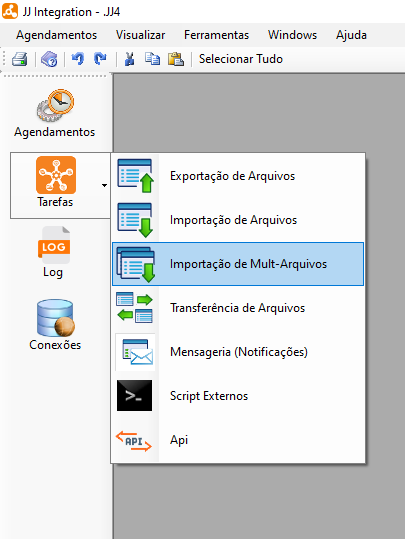
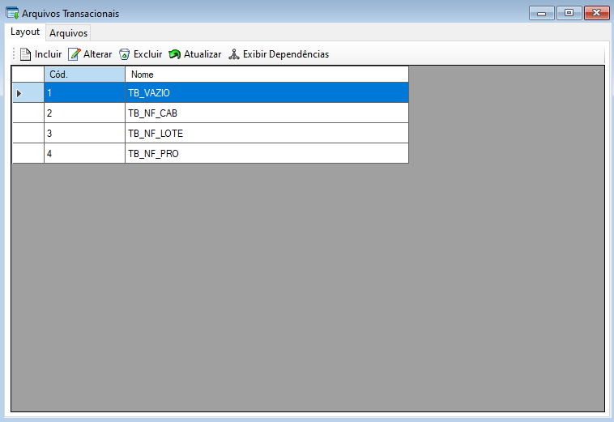
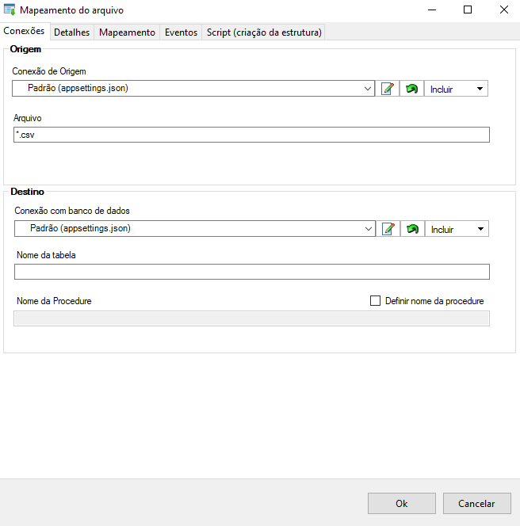
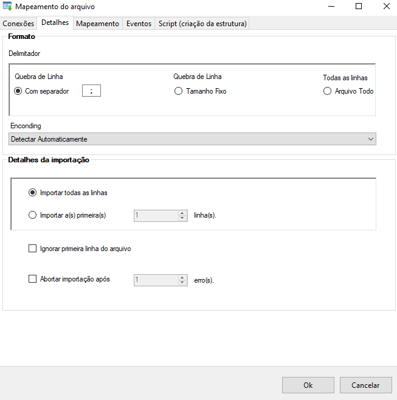
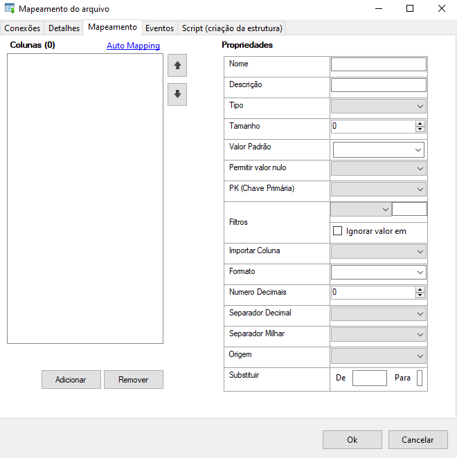
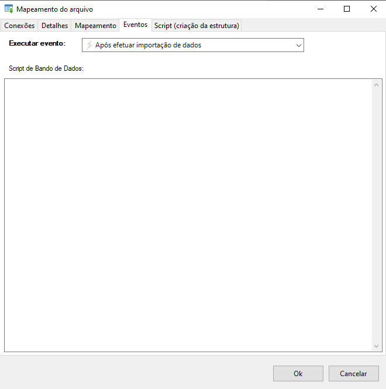
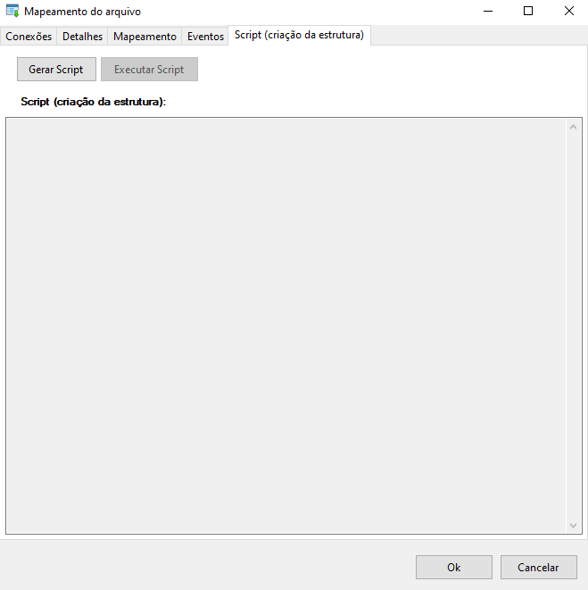
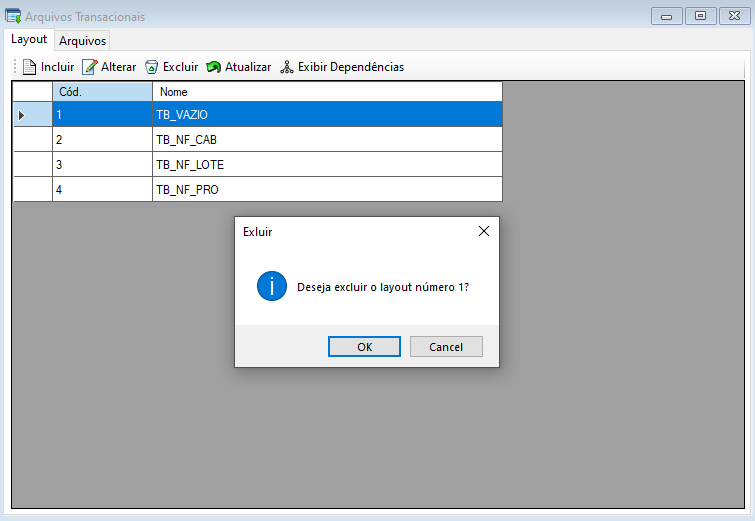
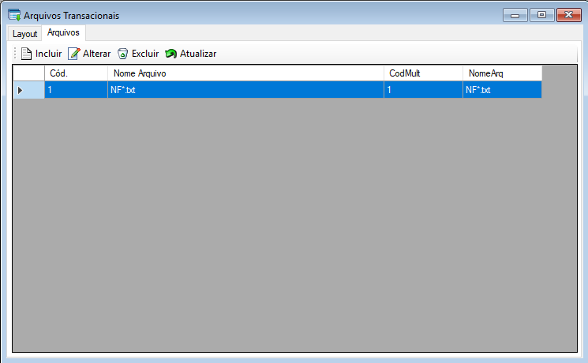
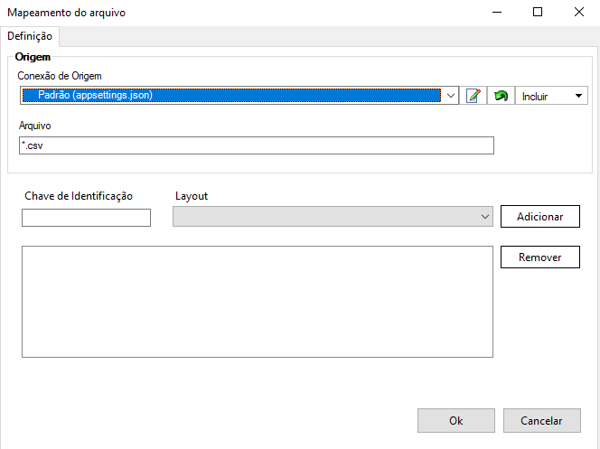

Importação de Mult-Arquivos
A Importação de Mult-Arquivos é uma função onde pode-se incluir, alterar, excluir arquivos cadastrados no sistema e atualizar a lista de arquivos.
Esta seção pode ser acessada pelo menu lateral em Tarefas ou menu de utilidades > Ferramentas > Importação de Mult-Arquivos.
Importação de Mult-Arquivos se refere à capacidade de ler e processar vários arquivos simultaneamente para obter dados e incorporá-los ao sistema de destino. Essa funcionalidade é útil quando há a necessidade de importar um grande número de arquivos de uma só vez, como por exemplo, ao receber dados de várias fontes externas ou ao realizar uma migração em massa de dados.

 Importação de Mult-Arquivos
Importação de Mult-Arquivos
- Ao selecionar o sistema, irá exibir uma tela que terá a aba de Layout e Arquivos onde será possível incluir, alterar e excluir arquivos e atualizar.
Layout:

Na aba 'Layout', selecione o botão Incluir  para incluir um novo mapeamento de importação de arquivos. Ao selecionar o sistema irá exibir uma tela para cadastro onde terá cinco abas para configuração sendo elas: arquivo, detalhes, mapeamento, eventos e script (criação de estruturas), ao finalizar o preenchimento selecione o botão "Ok" para salvar o novo mapeamento.
para incluir um novo mapeamento de importação de arquivos. Ao selecionar o sistema irá exibir uma tela para cadastro onde terá cinco abas para configuração sendo elas: arquivo, detalhes, mapeamento, eventos e script (criação de estruturas), ao finalizar o preenchimento selecione o botão "Ok" para salvar o novo mapeamento.
Na aba Conexões preencha os dados de formato, origem e destino desejados para a importação do arquivo.

Na aba Detalhes defina os detalhes de importação como número de linhas desejado, se deseja ou não ignorar a primeira linha e aborto de importação caso necessário.

Na aba Mapeamento pode-se adicionar ou remover colunas e definir as propriedades do arquivo como nome, descrição, tipo, tamanho, valor padrão e etc.

Na aba Eventos selecione o evento que deseja executar e preencha o campo Script com o script de banco de dados necessário para execução.

Na aba Script (criação de estrutura) selecione o botão "Gerar Script" para gerar a estrutura da importação e após selecione o botão "Executar Script" para executar a leitura da estrutura criada.

Selecione o botão Alterar  para editar um mapeamento de importação de arquivos. Ao selecionar o sistema irá exibir uma tela com detalhes onde terá cinco abas de configuração sendo elas: arquivo, detalhes, mapeamento, eventos e script (criação de estruturas), ao finalizar as alterações selecione o botão "Ok" para salvar e alterar o mapeamento.
para editar um mapeamento de importação de arquivos. Ao selecionar o sistema irá exibir uma tela com detalhes onde terá cinco abas de configuração sendo elas: arquivo, detalhes, mapeamento, eventos e script (criação de estruturas), ao finalizar as alterações selecione o botão "Ok" para salvar e alterar o mapeamento.
Na aba Conexões altere os dados de formato, origem e destino desejados para a importação do arquivo.
Na aba Detalhes altere as definições de detalhes de importação como número de linhas desejado, se deseja ou não ignorar a primeira linha e aborto de importação caso necessário.
Na aba Mapeamento Adicione novas colunas ou remova colunas existentes e altere as propriedades do arquivo como nome, descrição, tipo, tamanho, valor padrão e etc. caso necessário.
Na aba Eventos altere o evento que deseja executar e preencha o campo Script com o script de banco de dados necessário para execução.
Na aba Script (criação de estrutura) selecione o botão "Gerar Script" para gerar a estrutura da importação e após selecione o botão "Executar Script" para executar a leitura da estrutura criada.
Para excluir um layout selecione o layout desejado e após selecione o botão Excluir  , após selecionar o sistema irá exibir uma mensagem de confirmação, selecione o botão "Ok" para confirmar e excluir.
, após selecionar o sistema irá exibir uma mensagem de confirmação, selecione o botão "Ok" para confirmar e excluir.

Para atualizar a lista de Layouts selecione o botão Atualizar  , após selecionar o sistema irá atualizar a lista sendo possível dar continuidade nas atividades normalmente.
, após selecionar o sistema irá atualizar a lista sendo possível dar continuidade nas atividades normalmente.
Para exibir dependências da tarefa selecionada, selecione o botão Exibir Dependências  , após selecionar o sistema irá exibir a lista de dependências da tarefa caso exista alguma.
, após selecionar o sistema irá exibir a lista de dependências da tarefa caso exista alguma.

- Arquivos:

Vá na aba 'Arquivos' e selecione o botão Incluir para incluir um novo mapeamento de importação de arquivos. Ao selecionar, o sistema irá exibir uma tela para definir a conexão de origem, arquivo, chave de identificação e layout.

Inclua uma conexão de origem para estabelecer a conexão, o arquivo que irá receber e a 'Chave de Identificação', além disso é possível Adicionar e Remover um layout previamente inserido.
Selecione o botão Alterar caso seja necessário editar dados de um mapeamento de arquivo já criado. Também é possível Duplicar a importação já criada, visando simplificar o processo.
Para excluir um arquivo selecione o arquivo desejado e após selecione o botão Excluir , após selecionar o sistema irá exibir uma mensagem de confirmação, selecione botão "Ok" para confirmar e excluir.
Para atualizar a lista de Arquivos selecione o botão Atualizar , após selecionar o sistema irá atualizar a lista sendo possível dar continuidade nas atividades normalmente.